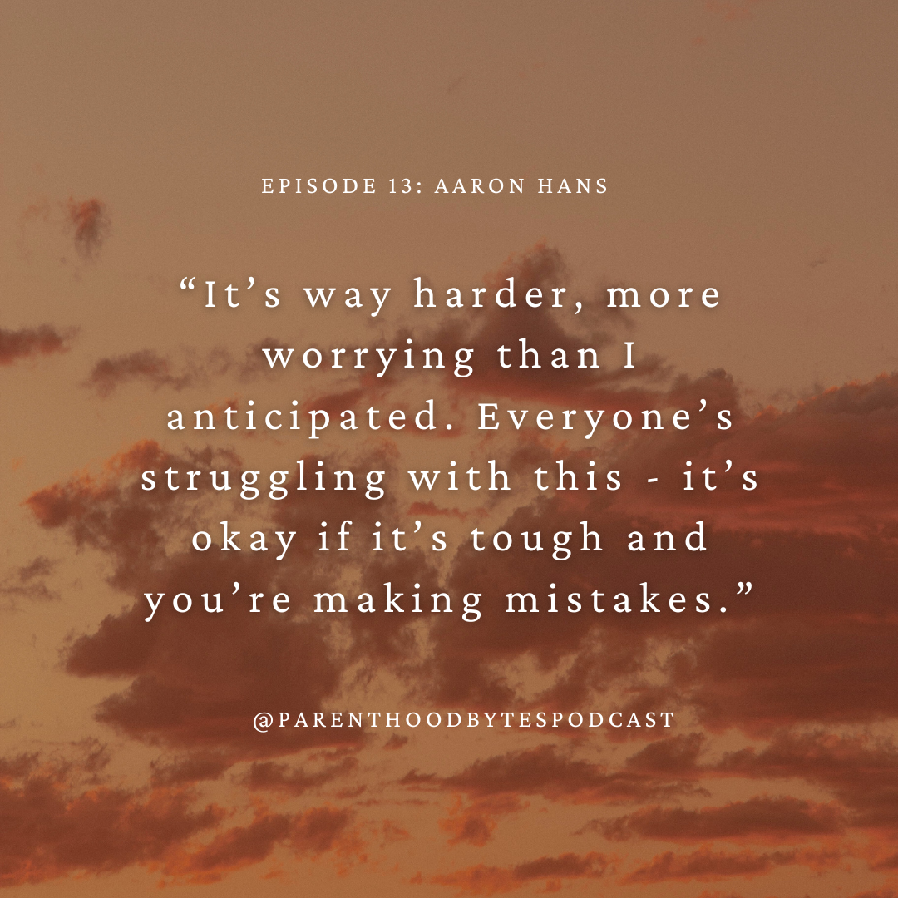

Episode 13: Aaron Hans

Episode Notes
In this episode, we sit down with Aaron Hans, a Senior Engineer based in the Bay Area and a parent to two children aged 12 and 9. Aaron shares his experiences and insights into the delicate process of adjusting to the intersection of work and life, all while striving to be the best parent possible.
A key theme in Aaron's discussion is the importance of having control over one's time. He emphasizes that this control enables him to focus on his children and prioritize his own health, creating a more balanced and fulfilling life.
Aaron candidly opens up about how having kids is way harder than anticipated but it's okay if things get tough and if mistakes are made along the way. The learning process is ongoing, and parents grow alongside their children, gaining wisdom and insights through shared experiences.